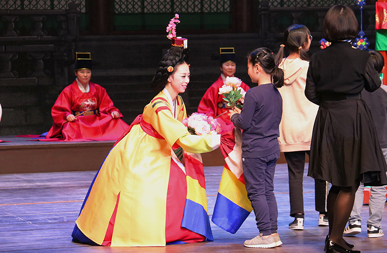

청소년 국악탐방
- 대상
- 영남지역 소재 초등학생(3~6학년), 중학생
- 강사
- 일시/장소
- 4월 6일, 20일, 5월 25일, 6월 8일, 29일, 9월 14일, 21일, 10월 5일(총 8회, 목요일) 예지당 또는 연악당
- 수강료
- 1인 3천원
국립부산국악원 공연장에서 펼쳐지는 청소년 국악 체험
교과서 국악을 감상하고 체험할 수 있는 공연 연계형 교육 프로그램. 국악을 직접 감상하고 체험하면서 국악에 대한 관심을 높일 수 있다. 2023년 하반기 부터는 공연 전후에는 교육체험관의 실감 콘텐츠와, 디지털 열람실을 체험하는 기회를 제공한다.
세부프로그램
A형 (3-4학년) 대취타, 처용무, 민요(배우기), 부채춤, 판굿 B형 (5학년 이상) 천년만세, 가야금병창, 판소리(배우기), 강강술래, 판굿 * 공연안전교육 20분 포함, 공연내용은 변경될 수 있음
